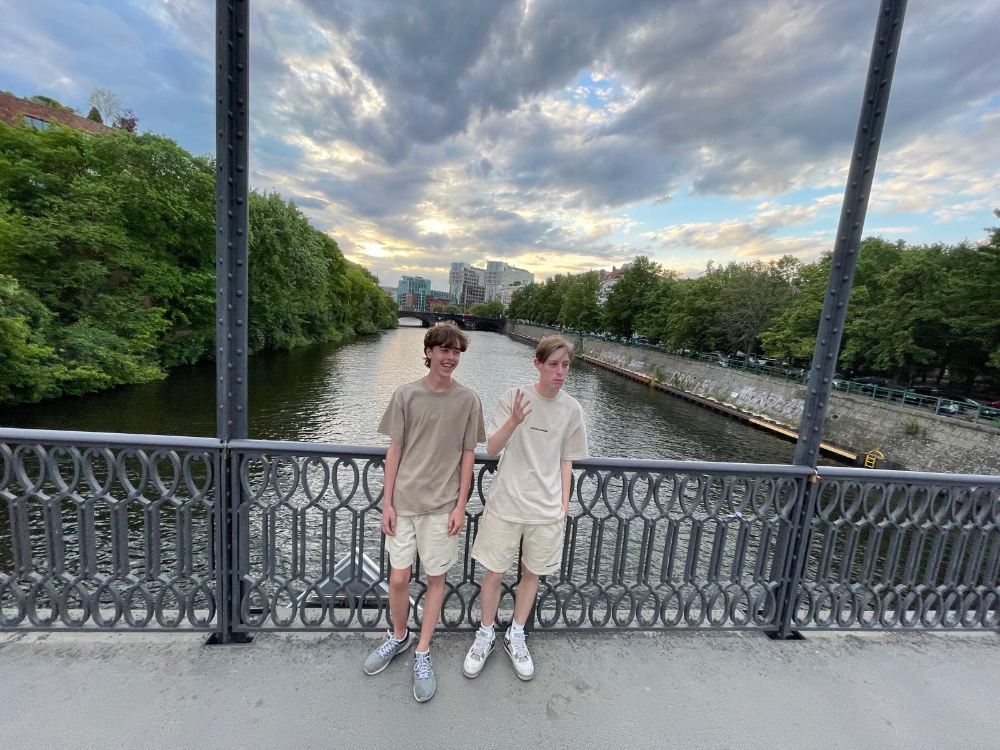

Opdracht Informatica havo 4: Een blog over mijzelf, Rafael Feenstra.

Ik ben Rafael Feenstra (links op de foto), nu havo 4 leerling op het Vlietlandcollege, Leiden. Ik ben 16 jaar oud en woon samen met mijn zusje en ouders in Zoeterwoude dorp. Op het vlietlandcollege doe ik E&M met infomatica als keuzevak. Informatica is voor mij een nieuwe ervaring, gezien ik biologie heb laten vallen voor informatica dit jaar. Deze begginde opdracht, een site bouwen en opmaken, bevalt mij dan ook erg. Ik doe graag aan voetbal, de sportschool, eten, gamen slapen, en een beetje alles wat iedere puber leuk vindt om te doen. Maar in deze blog zal ik het hebben over één hobby, voetbal.
Ik voetbal bij SJZ, sinds ik 10 jaar oud ben, begonnen in de JO-11-1 als voetbal team. Ik ben begonnen met voetbal omdat ik graag een andere sport zou willen doen, ik was tennis namelijk zat. Na het horen van verhalen over voetbal van een vriend werdt ik nieuwschierig en ben ik een avond mee naar training geweest. Sinds dien voetbal ik, nu in de JO-17-2. Ik en mijn zusje zijn die eerste uit ons gezin die aan voetbal doen, onze ouders hebben nooit op voetbal gezeten. Ik heb een neef waarmee ik goed bevriend ben en die ook op voetbal zit, wel een andere club. Ik had vorig jaar een wedstijd tegen hem, en het was één van zijn eerste wedstijden als keeper, waar die net mee begonnen was. Ik scoorde een doelpunt tegen mijn neef, ik heb er zelfs een foto van op mijn kamer staan...sorry Chris.
Voetbal is natuurlijk een wereldwijd bekende sport met grote competities waarin teams tegen elkaar voetballen om de competitie te winnen. Iedere voetbalfanaat support wel een team, ik vroeger ook. Maar ik ben de laatste tijd intresse verloren in het competitie voetbal, en support eigenlijk geen team meer.